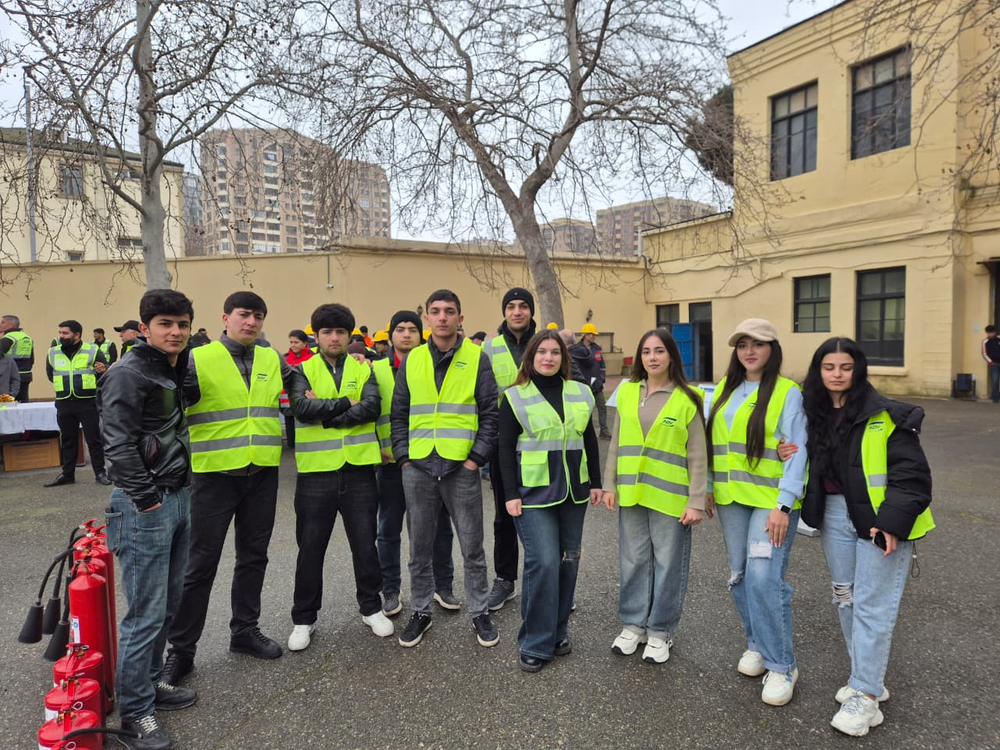
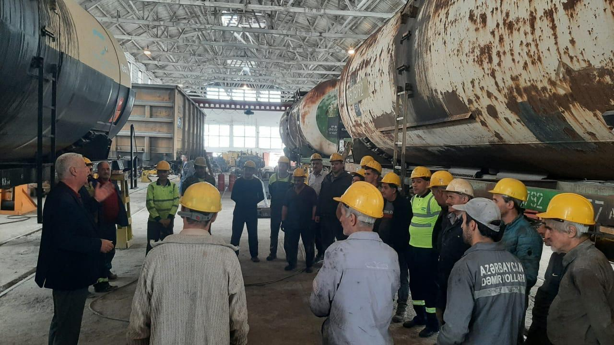
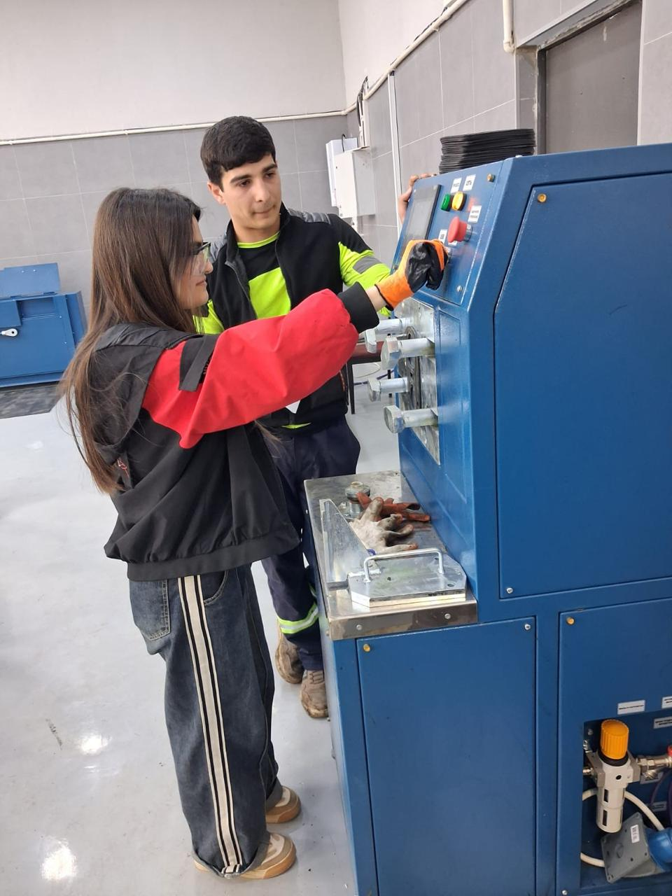
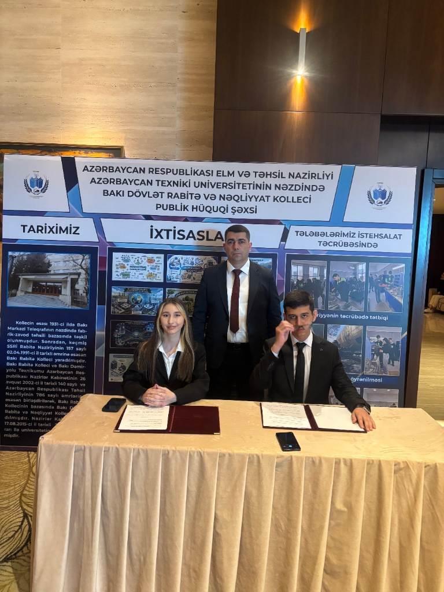

✦ SEÇİLMİŞ SƏNAYE KADRILARI · ADY QSC
İstehsalat Meydançasından Önə Çıxan Anlar


📸 TAM FOTO ARXİV · IS1–IS15
Bütün İstehsalat Təcrübəsi Kadrları
🔍
Axtarışa uyğun kadr tapılmadı
Zəhmət olmasa fərqli açar söz daxil edin və ya kateqoriya filtrini sıfırlayın.
📜 Rəsmi Təlimat və Əsasnamə
Azərbaycan Texniki Universiteti nəzdində Bakı Dövlət Rabitə və Nəqliyyat Kolleci Publik hüquqi şəxsi tələbələrinin ixtisas üzrə təcrübə keçmə qaydası
✍️ İstehsalat təcrübə rəhbəri:
X. S. Süleymanov

🏛️ Rəsmi Təcrübə Heyəti
Təcrübə Rəhbəri və Tələbələrimiz
İstehsalat təcrübəsi üzrə kollecin rəsmi təqdimat stendində

🎓 Kollec Stendi Önündə
Kollec İnstitusional Stendi
Tariximiz, ixtisaslarımız və istehsalat təcrübəsində nəzəriyyənin təcrübədə tətbiqi
Azərbaycan Texniki Universiteti nəzdində Bakı Dövlət Rabitə və Nəqliyyat Kolleci Publik hüquqi şəxsində təhsil alan tələbələr üçün istehsalat təcrübəsi tədris prosesinin tərkib hissəsidir və təlim prosesində tələbələrin aldıqları biliklərin əmək kollektivlərində təşkilatçılıq fəaliyyətinin aşılanması məqsədlərinə xidmət edir.
Təcrübə kadr hazırlığının bir hissəsi olmaqla, təcrübə bazasında keçirilir. Təcrübənin təşkil olunması üçün təhsil müəssisəsi tələbənin təhsil aldığı ixtisas sahəsinə uyğun olaraq təcrübə bazasını müəyyən edir. İstehsalat təcrübəsi üzrə təcrübə bazası müəyyən edilən zaman tələbənin də təkliflərinə baxılır.
Təcrübənin məqsədi, məzmunu və strukturu, təcrübə bazası və onun infrastrukturu, keçirilməsi formaları, müddəti və vaxtı, təcrübənin qiymətləndirilməsi üsulları və meyarları, təcrübə üzrə təlimin nəticələri təhsil müəssisəsi tərəfindən təsdiq edilən təcrübə proqramları ilə müəyyən olunur. Tədris planında ixtisas üzrə bir neçə təcrübə növü nəzərdə tutulduğu halda, hər bir növ üzrə ayrıca təcrübə proqramı hazırlanır.
📘
1. Tədris Təcrübəsi
Tələbənin nümunələr, maketlər, sınaqlar və s. vasitəsilə ilkin praktik vərdişlərə yiyələnməsinə yönələn təcrübədir. Orta ixtisas təhsili pilləsində tələbələrin təhsil aldıqları təhsil müəssisəsinin təcrübə bazasında, həmçinin ixtisasın xüsusiyyətindən asılı olaraq təhsil müəssisəsindən kənarda təşkil edilir.
🏭
2. İstehsalat Təcrübəsi
Tələbənin aldığı nəzəri biliklərini möhkəmləndirmək və onları praktiki bacarıqlarla tamamlamaq məqsədilə təhsil müəssisəsindən kənardakı təcrübə bazasında təşkil edilən təcrübədir. Tələbənin müraciəti əsasında təhsil müəssisəsinin yerləşdiyi şəhərdən kənarda da keçirilə bilər.
⚙️ Təcrübənin Təşkili Zamanı Əsas Tələblər:
✓
Təcrübə bazasının tələbənin ixtisasına tam uyğunluğunun təmin edilməsi
✓
Həyat və sağlamlıq üçün təhlükəsiz təcrübə şəraitinin yaradılması
✓
Tədris-öyrənmə və təcrübə arasında davamlı əlaqənin qurulması
✓
Tələbədə müasir informasiya texnologiyalarının tətbiqi istiqamətlərində bacarıqların artırılması
✓
Tələbənin müasir texnologiyalarla, iş üsulları və digər yeniliklərlə tanış edilməsi
✓
Peşəkar təcrübə rəhbərlərinin təyin edilməsi
✓
Təcrübə bazasının infrastrukturunun əlilliyi olan tələbələr üçün müyəssər olması
🏢 Tərəfdaşlıq Şəbəkəsi
İstehsalat Təcrübəsi Üzrə Rəsmi Müqavilə Bağlanılmış 8 Müəssisə
Tədris ilinin əvvəlində təsdiq olunmuş tədris qrafikinə uyğun olaraq müqavilə əsasında fəaliyyət göstərən strateji bazalar:
✉️
01. Müəssisə
“Azərpoçt” MMC
🌐
02. Müəssisə
“Aztelekom” MMC
🚆
03. Müəssisə
Azərbaycan Dəmir Yolları QSC
☁️
04. Müəssisə
“Azİntelekom” MMC
📻
05. Müəssisə
“Radio Qrup” MMC
⚡
06. Müəssisə
“İmpulse” MMC
💻
07. Müəssisə
UNEC Rəqəmsal Texnologiyaları Dep.
🛰️
08. Müəssisə
“Teleradio” İB (Peyk Rabitəsi)
Qiymətləndirmə: Təhsil müəssisəsinin və təcrübə bazasının təyin etdiyi təcrübə rəhbərlərinin iştirakı ilə Təcrübə Komissiyası tərəfindən aparılır. Hər bir təcrübə növü üzrə ayrılıqda qiymətləndirilir.
Rəsmi Qaydalar və Təsdiq
İstehsalat təcrübə rəhbəri:
X. S. Süleymanov
✦ STRUKTURLU TƏCRÜBƏ PROQRAMI
Kollec Tələbəsinin İstehsalatda İnkişaf Mərhələləri
MƏRHƏLƏ 01
Təhlükəsizlik və Giriş Təlimatı
Dəmiryol müəssisəsində əməyin mühafizəsi qaydaları, fərdi mühafizə vasitələri və yanğın təhlükəsizliyi standartlarının mənimsənilməsi.
MƏRHƏLƏ 02
Depo və Avadanlıqlarla Tanışlıq
Vaqonların təkər cütləri, buks düyünləri, sistern konstruksiyası və mexaniki təmir dəzgahlarının iş prinsipinin öyrənilməsi.
MƏRHƏLƏ 03
Stend Sınaqları və Praktiki İcra
Təlimatçı-mühəndislərin rəhbərliyi ilə avtoəyləc klapanlarının sökülüb-yığılması, təmizlənməsi və pnevmatik stenddə sınağı.
MƏRHƏLƏ 04
Peşəkar Rəy və Karyera Körpüsü
İstehsalat vərdişlərinin qiymətləndirilməsi və gələcəkdə dəmiryol-nəqliyyat sahəsində işə qəbul üçün praktiki bazanın formalaşması.